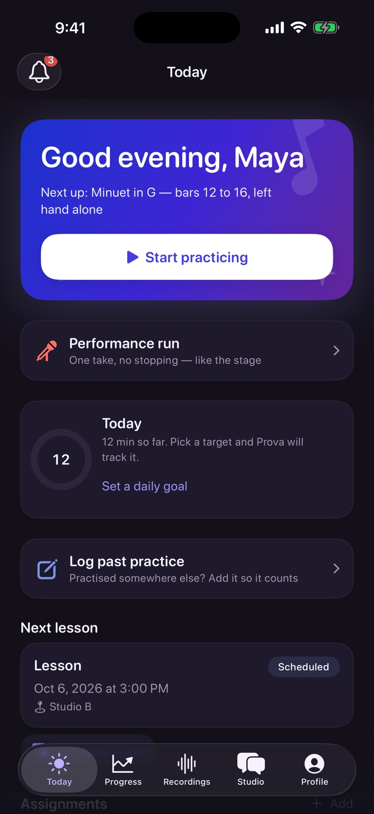
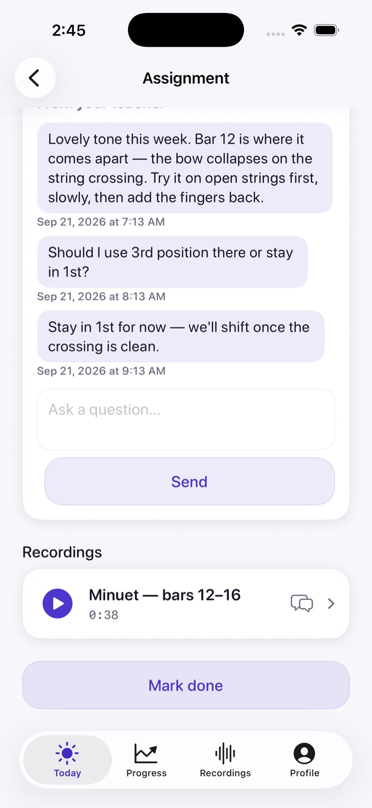

Music practice, connected
The week
between
lessons.
Give them a next step.
Hear where it takes them.
Prova brings your teaching into the practice week: clear work, shared takes, and feedback right where it matters.

Native motion study · silent
From lesson to practice
More than
“keep practicing.”
A passage. A tempo. One thing to listen for. Give students something specific to work on, and a way to come back to you before the next lesson.
01 / Teacher → Student
After the lesson
Make “practice this”
mean something.
“Left hand alone. Bars 12–16. Start at 60.” A piece becomes a plan your student can follow when they’re on their own.
Minuet in G / bars 12–16
Next: up to 72. Check a step to see the focus change.
02 / Student
At the music standOne thing
to listen for.
Between lessons, the instruction stays close. See the next step, keep time, and practice the passage with purpose.
Slow and even. Record one take when it feels steady.
Next: up to 72
A sample timer. No practice is saved.
Find a steady tempoMetronome
Start slowly. Keep it even. Turn it up when it feels steady.
Sound starts only when you press Play. A browser demonstration of Prova’s metronome.

03 / Student → Teacher
When it’s ready to be heardSend the passage.
Keep the connection.
It doesn’t have to be a performance. Capture the part you want help with, then choose to share that take with your teacher.
See how a teacher can answer
04 / Teacher → Student
“Right there.
That’s the moment.”
Pin a note to a second in the take.
Your student can return to that moment
and hear what you mean.
Minuet in G / bars 12–16
Select a teacher’s note to find its moment.
At 0:18
Let the half note ring its full value.
A small, specific thing to try the next time you play.
A sentence on Thursday.
A different practice on Friday.
The recording is one way to stay connected. Questions and replies also live in the assignment’s own thread, alongside the work.
05 / Teacher & Student
Walk in
knowing the week.
See the practice sessions, the student’s notes, and the takes they shared, together with the piece. Spend the next lesson moving forward.
Bring the connection to your studio
Your studio, connected
The next lesson
starts here.
Try Prova with your studio. Give the week a clear beginning, and come back ready to listen.
Explore beta accessBefore your first practice
How does a studio join?
Teachers create a studio and share a class code. Students enter the code, and the teacher approves their request.
Who hears a student’s take?
Ordinary practice takes stay private until the student shares them. A Performance run is sent to the teacher; Prova explains that before it starts.
Can younger students join?
The beta is for ages 13 and up. Younger students cannot join this beta.
What does the beta cost?
Prova is free during the beta. Your feedback helps shape what comes next.
Prova is in beta. Students join through their teacher.